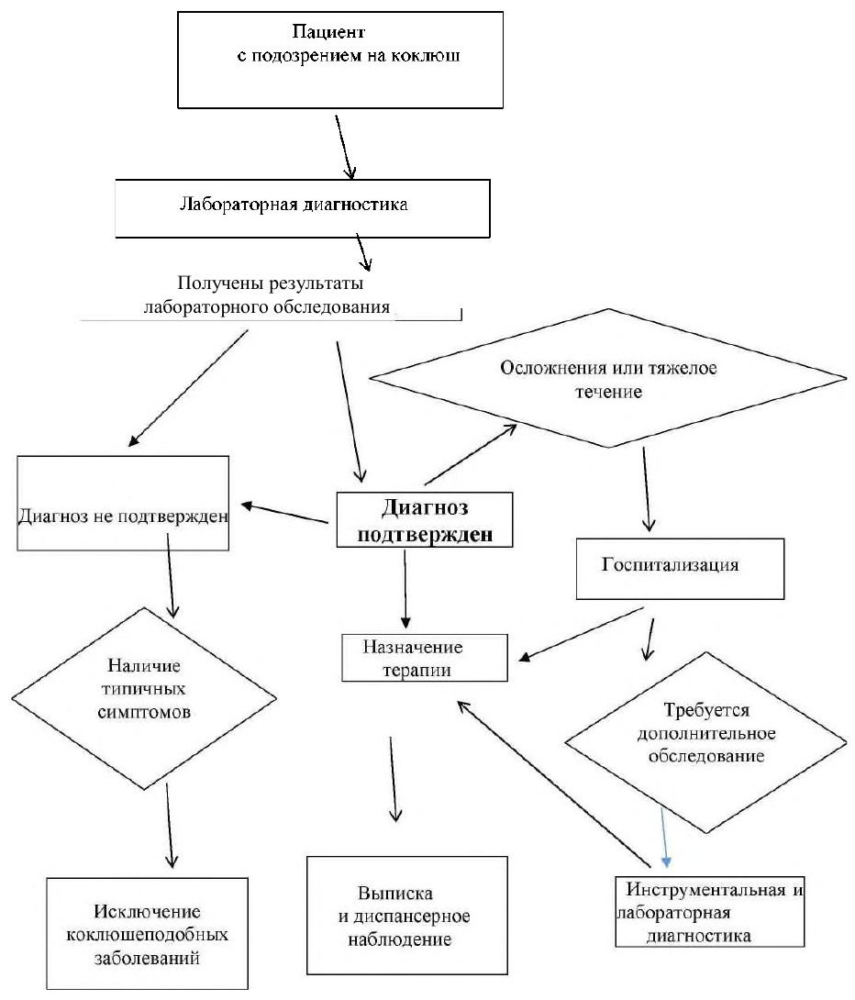

Сверка с PDF рубрикатора выполняется…
Коклюш у детей
Клинические рекомендации от 26.01.2026 · дети
Основные положения
- Коклюш — острая инфекция, вызываемая Bordetella pertussis, с длительным приступообразным судорожным (спазматическим) кашлем и поражением дыхательной, сердечно-сосудистой и нервной систем.
- Коклюш подозревают при кашле более 7 дней: сначала сухой навязчивый, затем приступообразный судорожный, с репризами, рвотой или вязкой стекловидной мокротой; температура тела, как правило, нормальная, интоксикации нет.
- Подтверждение диагноза: ПЦР мазка со слизистой оболочки носоглотки однократно при кашле от 7 до 28–35 дней; при кашле 3 недели и более — антитела к B. pertussis методом ИФА.
- Антибиотики (в первую очередь макролиды) показаны детям первого года жизни при обращении в течение 6 недель от начала болезни, остальным — в течение 3 недель; на длительность кашля они не влияют, но снижают заразность.
- Показания к переводу в ОРИТ: апноэ более 15 секунд у младенца или более 10 секунд у новорождённого, десатурация SpO₂ менее 90% при пароксизме, судороги, угнетение сознания.
- Осложнения, с которыми обращаются к оториноларингологу: носовые кровотечения на высоте кашля, кровотечения из заднеглоточного пространства и наружного слухового прохода, разрывы барабанной перепонки, вторичный отит.
Клиническая картина и классификация
Определения
Коклюш (Pertussis) — острое антропонозное инфекционное заболевание, вызываемое бактериями рода Bordetella (преимущественно Bordetella pertussis) и передающееся воздушно-капельным путём. Характеризуется длительным приступообразным судорожным (спазматическим) кашлем и поражением дыхательной, сердечно-сосудистой и нервной систем.
Репризы — звучные судорожные вдохи, возникающие при прохождении воздуха через суженную вследствие ларингоспазма голосовую щель.
Этиология и патогенез
Возбудитель — Bordetella pertussis, грамотрицательная палочка, неустойчивая во внешней среде. Коклюшеподобное заболевание вызывают также B. parapertussis, редко B. bronchiseptica. Основное значение в патогенезе имеет коклюшный токсин с системным действием.
Длительный кашель связан с гиперреактивностью бронхов на фоне колонизации носоглотки B. pertussis; колонизация у реконвалесцентов и контактных может длиться более 3 и до 6 месяцев.
Эпидемиология
Индекс контагиозности у непривитых детей первого года жизни достигает 70–100%. Наибольшая заболеваемость и риск летальных осложнений — у детей до 1 года; источниками заражения младенцев чаще являются школьники и взрослые. После перенесённого коклюша иммунитет сохраняется 10–20 лет.
Классификация
- по форме: типичная; атипичные — стёртая, бактерионосительство
- по тяжести: лёгкая, среднетяжёлая, тяжёлая
- по течению: гладкое; негладкое — с осложнениями, с наслоением вторичной инфекции, с обострением хронических заболеваний
Клиническая картина
Инкубационный период — от 3 до 14 дней (в среднем 7–8), реже до 21 дня.
Типичная форма- постепенное начало при нормальной температуре тела, без интоксикации;
- сухой навязчивый кашель, нарастающий в динамике;
- в разгаре — приступообразный судорожный кашель с репризами;
- после приступа — рвота или отхождение вязкой стекловидной мокроты.
Степень тяжести коклюша раздел 1.6 КР
| Тяжесть | Клиническая картина | Гемограмма |
|---|---|---|
| лёгкая | 8–10 непродолжительных приступов в сутки, рвоты и кислородной недостаточности нет, состояние удовлетворительное | лейкоциты не более 10–15·10⁹/л, лимфоциты до 70% |
| среднетяжёлая | до 15–20 продолжительных приступов в сутки, рвота, периоральный цианоз при кашле; одутловатость лица, отёчность век, кровоизлияния в склеры; надрыв или язвочка уздечки языка | лейкоцитоз до 20–30·10⁹/л, лимфоцитоз до 80% |
| тяжёлая | 25–30 и более приступов в сутки с рвотой и пароксизмами, постоянный цианоз, геморрагии на коже шеи и плечевого пояса; угрожающие жизни осложнения — апноэ, внутричерепные кровоизлияния, судороги | лейкоцитоз 40·10⁹/л и более, лимфоцитоз 85% и более |
В приложении Г1 КР пороги частоты приступов другие: до 15, 16–25 и более 25 в сутки (таблица приложения — в «Подробнее»).
При определении тяжести основное значение имеют клинические критерии; гематологические изменения вспомогательны и оцениваются при моноинфекции.
Критерии степени тяжести по клиническим и гематологическим признакам приложение Г1 КР
| Признак | Лёгкая | Среднетяжёлая | Тяжёлая |
|---|---|---|---|
| цианоз лица при кашле | нет | цианоз носогубного треугольника | цианоз лица |
| длительность предсудорожного периода | 10–14 дней | 6–9 дней | 3–5 дней |
| частота приступов кашля | до 15 в сутки, репризы редко | 16–25 в сутки, репризы часто | более 25 в сутки, пароксизмы |
| лейкоцитоз | 10–15·10⁹/л | до 20–30·10⁹/л | более 40–50·10⁹/л |
| лимфоцитоз | до 70% | 70–80% | более 80% |
- пневмония, ателектаз, эмфизема средостения;
- задержки дыхания до 30 секунд и остановки дыхания (апноэ) более 30 секунд;
- коклюшная энцефалопатия (гипоксический отёк мозга, кровоизлияние в мозг);
- кровотечения из носа, заднеглоточного пространства, бронхов, наружного слухового прохода; кровоизлияния в кожу, слизистые оболочки, склеры, сетчатку, головной мозг;
- грыжи, выпадение слизистой оболочки прямой кишки;
- разрывы барабанной перепонки и диафрагмы.
Неспецифические осложнения связаны с вторичной бактериальной флорой: пневмония, бронхит, бронхиолит, лимфаденит, отит.
Стратификация риска развития осложнений таблица 3 раздела 7 КР
| Осложнение | Факторы высокого риска |
|---|---|
| Тяжёлое течение коклюша |
|
| Нарушения ритма дыхания (задержки и остановки дыхания) |
|
| Тяжёлая коклюшная энцефалопатия с судорожным синдромом |
|
| Вторичная бактериальная пневмония |
|
Апноэ возникает преимущественно у детей первых месяцев жизни. Спазматическое апноэ развивается во время приступа кашля и длится от 30 секунд до 1 минуты; синкопальное не связано с кашлем: вялость, бледность, затем цианоз, остановка дыхания на 1–2 минуты при сохранённой сердечной деятельности.
Резидуальные изменения: хронический бронхит, бронхоэктатическая болезнь, задержка психомоторного развития, судорожный синдром, речевые расстройства; редко у непривитых без лечения — слепота, глухота, парезы.
Диагностика
Критерии диагноза
- эпидемиологических данных: контакт с больным коклюшем или кашляющими;
- клинической картины: длительный, чаще приступообразный кашель;
- прививочного статуса;
- результатов лабораторной диагностики.
Для подтверждения диагноза достаточно положительного результата одного из лабораторных исследований.
Жалобы и анамнез
Целенаправленно выявляют кашель более 7 дней и уточняют его характер.
- в первые 7–14 дней кашель сухой навязчивый, затем приступообразный судорожный; рвота после кашля присоединяется на 2–3-й неделе;
- чем заканчивается приступ: рвотой, вязкой стекловидной мокротой;
- репризы, цианоз лица во время приступа (признак тяжёлого течения);
- задержки дыхания, судороги, нарушения сознания;
- другие катаральные симптомы: ринорея, заложенность носа, боль или першение в горле, осиплость голоса, одышка.
Отсутствие типичных приступов не исключает атипичных (стёртых) форм у детей, привитых в предшествующие 3–4 года, подростков и взрослых. Отсутствие репризов коклюш не исключает.
Уточняют контакт с больным коклюшем или длительно (более 3–4 недель) кашляющим ребёнком или взрослым. При контакте с лабораторно подтверждённым случаем и коклюшеподобной картине можно диагностировать эпидемиологически связанный случай.
Уточняют температуру тела в начале болезни: в предсудорожном периоде она повышается редко, что помогает дифференциальной диагностике; лихорадка возможна при наслоении ОРВИ или осложнениях. Интоксикации при гладком течении нет.
Уточняют вакцинальный статус: вакцинация не исключает заболевания, но исключает тяжёлую форму.
Осмотр кожи и уздечки языка
Оценивают кожу: периоральный цианоз, отёчность лица и век, петехии на лице, кровоизлияния в склеры и кожу век. Цианоз, отёчный и геморрагический синдромы свидетельствуют о среднетяжёлом или тяжёлом течении; геморрагический синдром проявляется также носовыми кровотечениями на высоте кашля.
Осматривают уздечку языка: надрыв или язвочка характерны для коклюша, но их отсутствие коклюш не исключает.
Аускультация лёгких
При аускультации в периоде судорожного кашля выслушивают жёсткое дыхание и непостоянные грубые проводные хрипы, исчезающие после приступа. Постоянные хрипы, очаговая симптоматика и бронхообструктивный синдром для моноинфекции нехарактерны и указывают на осложнение или сочетанную инфекцию.
Общий анализ крови
Всем пациентам с подозрением на коклюш показан общий развёрнутый анализ крови: лейкоцитоз за счёт лимфоцитоза при нормальной СОЭ свидетельствует в пользу коклюша.
Отсутствие типичных изменений коклюш не исключает. Нейтрофилёз, сдвиг формулы влево, ускорение СОЭ указывают на осложнения или сочетанную инфекцию. При лейкоцитозе анализ повторяют до нормализации.
ПЦР мазка из носоглотки
Определение ДНК B. pertussis, B. parapertussis, B. bronchiseptica в мазке со слизистой оболочки носоглотки методом ПЦР однократно — для подтверждения диагноза.
ПЦР применяется у пациентов, кашляющих более 7, но не более 28–35 дней, и у контактных работников детских учреждений; результат не зависит от вакцинации и антибактериальной терапии. Для контроля эффективности лечения ПЦР не используется: ДНК погибших микробов сохраняется до 3–4 недель.
Специфичность ПЦР 85–98%, чувствительность 45–65%.
Антитела к Bordetella pertussis методом ИФА
Пациентам, кашляющим 3 недели и более, определяют антитела к B. pertussis методом ИФА: IgM, IgA в ранние сроки, IgG — в поздние. Метод предпочтителен у подростков и на сроке более 4 недель.
У привитых в последние 5–7 лет диагноз подтверждается четырёхкратным нарастанием титров IgG через 10–14 дней либо выявлением IgA и высоких титров IgG у привитых более 5 лет назад. Специфичность 89%, чувствительность 65%.
Посев слизи с задней стенки глотки
Двукратное культуральное исследование слизи с задней стенки глотки — при кашле не более 14–21 дня, до начала антибактериальной терапии, натощак или не ранее чем через 2 часа после еды.
Специфичность 100%, чувствительность 15% и менее: отрицательный результат коклюш не исключает; результат получают с задержкой.
Исследования на другие респираторные возбудители
Показания: негладкое течение или отсутствие эффекта терапии — лихорадка, нарастание катаральных симптомов, бронхообструкция.
Исследования- ПЦР мазков из носо- и ротоглотки на парагрипп, РС-вирус, метапневмовирус, риновирус, аденовирус, бокавирус;
- ПЦР на Chlamydophila pneumoniae и Mycoplasma pneumoniae;
- антитела к Mycoplasma pneumoniae и Chlamydophila pneumoniae в крови.
Детям первого года жизни при тяжёлом и негладком течении определяют маркеры активной цитомегаловирусной инфекции (IgM, ДНК ЦМВ в крови, моче, слюне): она достоверно повышает риск тяжёлого течения и неблагоприятного исхода.
- негладкое течение беременности и родов;
- недоношенность, низкая масса тела при рождении;
- недостаточные прибавки массы тела в первые месяцы жизни;
- затяжная желтуха новорождённых.
- бронхообструктивный синдром;
- умеренная гепатоспленомегалия;
- повышение аминотрансфераз (АЛТ, АСТ);
- признаки нефропатии: лейкоциты или эритроциты в моче;
- энтероколит лёгкой степени (лейкоциты в кале) при отсутствии установленной кишечной инфекции.
Рентгенография лёгких
Показание: подозрение на пневмонию или ателектаз — лихорадка, интоксикация, очаговая симптоматика, одышка, тахипноэ, «стонущее» дыхание, учащение приступов.
Электрокардиография и эхокардиография
Показание: тяжёлое течение — ранняя диагностика кардиальных осложнений и лёгочной гипертензии; также фоновые заболевания и пороки сердца, тахикардия, аритмия.
Электроэнцефалография и нейросонография
Электроэнцефалография показана при тяжёлом негладком течении с декомпенсацией неврологической патологии, судорогами, признаками отёка мозга.
Нейросонография показана детям первого года жизни при появлении или нарастании неврологической симптоматики.
Бронхоскопия
Показание: обширные или не расправляющиеся 2 недели и более ателектазы — оценка бронхиальной проходимости.
Пульсоксиметрия
Показание: тяжёлое течение, особенно с задержками дыхания, судорогами, пневмонией, бронхообструкцией — уточнение показаний к ИВЛ.
Консультации специалистов
Консультация офтальмолога показана при субконъюнктивальных кровоизлияниях.
Консультация невролога показана при тяжёлых формах с неврологической симптоматикой или сопутствующей неврологической патологией.
Лечение
- эрадикация возбудителя;
- купирование приступов судорожного кашля;
- предупреждение и лечение осложнений, в том числе апноэ и коклюшной энцефалопатии.
Этиотропная терапия
Всем пациентам с коклюшем назначают антибактериальные препараты системного действия: в первую очередь макролиды, при их непереносимости — пенициллины широкого спектра или цефалоспорины III поколения.
| Препарат | Возрастная группа | Режим дозирования | Длительность |
|---|---|---|---|
| Азитромицин | старше 6 месяцев | 10 мг/кг в сутки в 1 приём | 5 дней |
| Эритромицин | в КР не указана | внутрь 10–15 мг/кг каждые 8 часов, не более 2 г в сутки | 14 дней |
| Кларитромицинoff-label | старше 1 месяца | внутрь 7,5 мг/кг 2 раза в сутки, не более 1 г в сутки | 7–14 дней |
| Пиперациллин + тазобактамoff-label | тяжёлое течение, в том числе младше 2 месяцев | в/в 40–50 мг/кг каждые 8 часов | 1–2 недели |
| Цефоперазон + сульбактамoff-label | тяжёлое течение | в/в 50–60 мг/кг каждые 12 часов | 1–2 недели |
| Цефотаксим, цефтриаксон, ампициллин, амоксициллин | по инструкции | по инструкции | по инструкции |
Антибиотики назначают детям первого года жизни, обратившимся в течение 6 недель от начала болезни, остальным — в течение 3 недель. Они уменьшают колонизацию и заразность, но не влияют на выраженность и длительность кашля.
Независимо от сроков антибиотики показаны при бронхолёгочных осложнениях вторичной флоры и хронических заболеваниях лёгких.
Азитромицин в суспензии 100 мг/5 мл: от 2,5 мл (50 мг) при массе 5 кг до 5 мл (100 мг) при 10 кг; 200 мг/5 мл: 2,5 мл при 10–14 кг, 5 мл при 15–24 кг, 7,5 мл при 25–34 кг, 10 мл при 35–44 кг, 12,5 мл (500 мг) при 45 кг и более.
Бессимптомным носителям в очагах антибиотики (предпочтительно макролиды) назначают только при тесном контакте с детьми групп риска тяжёлого течения и по эпидемическим показаниям.
- младенцы моложе 3 месяцев;
- непривитые или не получившие полный первичный курс;
- недоношенные, с низкой массой тела при рождении или оценкой по Апгар менее 8;
- тяжёлые врождённые пороки сердца;
- лейкоцитоз более 20·10⁹/л с лимфоцитозом более 10·10⁹/л;
- апноэ и цианоз в дебюте;
- коинфекция или сопутствующая пневмония.
Патогенетическая и симптоматическая терапия
При спазматическом кашле применяют противокашлевые средства центрального действия: бутамират в каплях с 2 месяцев, в сиропе и таблетках — по инструкции.
При обильной вязкой трудноотделяемой мокроте — амброксол по инструкции. Одновременно противокашлевые и муколитические средства не назначают.
При среднетяжёлом, тяжёлом и осложнённом течении с дыхательными расстройствами, энцефалопатией или поражением нижних дыхательных путей — оксигенотерапия (кислородная палатка или маска, кислорода не более 40%).
Показания к кислороду- бледность, цианоз;
- брадикардия;
- сатурация менее 93%, в том числе во время пароксизма.
При остановке дыхания выполняют ритмичное надавливание на грудную клетку и искусственное дыхание ручным респиратором. При повторных задержках или остановке дыхания более 30 секунд ребёнка переводят в ОРИТ.
При признаках тяжёлого коклюша и угрожающих жизни осложнений показана консультация анестезиолога-реаниматолога для перевода в ОРИТ.
Признаки утяжеления и отёка мозга- судороги, апноэ;
- выбухание и пульсация большого родничка;
- любая степень угнетения сознания;
- изменение ритма мочеиспусканий, нарастание отёков;
- поражение нижних дыхательных путей, одышка, цианоз лица при кашле.
Показания к переводу в ОРИТ — в блоке «Показания к госпитализации».
Тяжёлый коклюш с отёком мозга и нарушениями ритма дыхания, разлитой цианоз лица при приступах у детей первых месяцев — системные глюкокортикоиды: гидрокортизонoff-label 5–7 мг/кг 3 дня, преднизолон или дексаметазон; курс 2–5 дней, не более 7–9.
При судорогах на фоне коклюшной энцефалопатии применяют диазепамoff-label внутривенно или внутримышечно.
- разовая доза: 0,25 мг/кг, возможно 2 раза в сутки;
- дети до 5 лет: не более 5 мг в сутки;
- дети 6–12 лет: не более 20 мг в сутки;
- дети старше 12 лет: не более 40 мг в сутки.
Другие противоэпилептические препараты применяют по назначению анестезиолога-реаниматолога или невролога.
При тяжёлом коклюше у детей раннего возраста для уменьшения гипоксии мозга назначают фенобарбитал (в КР указано «для детей с 3 лет»).
Иное лечение
При затруднённом откашливании проводят отсасывание слизи из верхних дыхательных путей электроотсосом, планово 2–3 раза в день или по показаниям, преимущественно у детей первого года.
При сочетанной ОРВИ назначают противовирусные препараты или иммуностимуляторы: интерферон альфа-2b, меглюмина акридонацетат (с 4 лет), антитела к гамма-интерферону аффинно очищенные (старше 1 месяца), комбинированные антитела к гамма-интерферону, гистамину и CD4 (старше 6 месяцев).
Специальных программ реабилитации нет. Реконвалесцентам тяжёлого негладкого коклюша (энцефалопатия, пневмония) и при коморбидных состояниях — реабилитация у профильных специалистов и санаторно-курортное лечение.
Алгоритм действий врача

Профилактика и диспансерное наблюдение. Показания к госпитализации
Показания к госпитализации
Лёгкое и среднетяжёлое течение без факторов риска лечится амбулаторно у педиатра или инфекциониста. Тяжёлое течение, среднетяжёлое с факторами риска, эпидемиологические показания — стационар с ОРИТ; угрожающие жизни осложнения — ОРИТ. В стационаре пациентов размещают в боксах.
- брадикардия или пароксизм с десатурацией SpO₂ менее 90%;
- цианоз, вялость, выраженная бледность;
- апноэ более 15 секунд у младенца или более 10 секунд у новорождённого;
- апноэ любой продолжительности с десатурацией;
- прогрессирующая дыхательная недостаточность;
- угнетение сознания;
- судороги;
- подозрение на отёк головного мозга.
Критерий выписки из стационара — удовлетворительное состояние.
- нет тяжёлых приступов кашля с репризами;
- приступов кашля нет или их стало меньше;
- гемограмма нормализовалась (лимфоцитоз может сохраняться долго);
- при пневмонии — нормализация клинической, гематологической и рентгенологической картины.
Противоэпидемические мероприятия
Заразность наиболее высока в предсудорожном периоде и в начале периода судорожного кашля; к 25-му дню больной, как правило, незаразен. На фоне эффективной антибактериальной терапии ребёнок незаразен через 5 дней лечения или после окончания курса.
Без антибиотиков непривитый ребёнок в тесном контакте может заразиться до 7-й недели периода судорожного кашля.
Дети с коклюшем изолируются на 25 суток от начала заболевания. О случае сообщают по телефону в течение 2 часов, экстренное извещение направляют в течение 12 часов.
Мероприятия в очаге- карантин для контактных детей до 7 лет на 14 суток от изоляции больного; дети старше 7 лет разобщению не подлежат;
- на время карантина запрещены приём новых детей, не болевших коклюшем, и перевод из одной группы в другую;
- ежедневное медицинское наблюдение за контактными детьми и взрослыми;
- дезинфекция (текущая и заключительная) не проводится, достаточно проветривания и влажной уборки.
- изоляция не менее 14 дней с момента прекращения общения или со дня выделения возбудителя, до 2 отрицательных результатов бактериологического исследования или однократного молекулярно-генетического исследования (ПЦР);
- медицинское наблюдение за контактными 14 дней с момента прекращения общения; при вторичных случаях в очаге до 21-го дня с момента изоляции последнего заболевшего;
- заключительная дезинфекция не проводится.
Переболевшие допускаются в образовательные учреждения после 25-го дня болезни.
Реконвалесцентов выписывают в коллектив при клиническом выздоровлении. От физкультуры освобождают на 2 недели, медицинский отвод от прививок — 1 месяц.
Всем контактным детям, в том числе новорождённым, и взрослым после изоляции больного проводится постконтактная профилактика; препараты выбора — макролиды.
Профилактика показана независимо от возраста и вакцинального статуса при тесном контакте с больным манифестной формой в закрытом помещении в течение 1 часа и более или при контакте с его респираторными секретами.
Детям первого года жизни и непривитым детям до 2 лет с аллергией на макролиды вводят иммуноглобулин человека нормальный двукратно с интервалом 24 часа в разовой дозе 3,0 мл, как можно раньше после контакта.
Вакцинопрофилактика
По национальному календарю вакцинация против коклюша, дифтерии и столбняка проводится в 3 – 4,5 – 6 – 18 месяцев. При нарушении сроков стремятся к полному курсу: 3 введения с интервалом не менее 1–1,5 месяца и ревакцинация через 12 месяцев; дополнительных доз при удлинении интервалов не требуется.
Перенесённый коклюш не создаёт длительной защиты и не является противопоказанием к вакцинации. В очаге активная иммунизация не проводится; частично привитым вакцинацию продолжают по календарю.
Для защиты ребёнка до начала вакцинации возможна однократная вакцинация беременной во II или III триместре, не позднее 15 дней до родов, вакциной АакдС.
Оптимальная стратегия — своевременный охват детей первых двух лет жизни и поэтапное внедрение возрастных ревакцинаций в 6–7 лет, 14 лет и взрослых каждые 10 лет.
Первоочередные группы для ревакцинации- дети и взрослые с хронической бронхолёгочной патологией, бронхиальной астмой;
- иммунодефицитные состояния, ВИЧ-инфекция, онкологические заболевания;
- дети, первично привитые бесклеточными вакцинами;
- дети из многодетных семей и закрытых учреждений;
- сотрудники медицинских, образовательных и социальных учреждений;
- взрослые в семьях с новорождёнными и непривитыми детьми до 1 года;
- женщины, планирующие беременность.
- начало вакцинации и 1-я ревакцинация до 24 месяцев включительно: любые зарегистрированные вакцины по схеме 3+1, интервал между дозами 1,5–2 месяца, ревакцинация через 12 месяцев после 3-й дозы;
- с 2 лет до 3 лет 11 месяцев 29 дней: АКДС-ВГВ, АаКДС, АаКДС-ИПВ//ХИБ;
- с 4 до 5 лет 11 месяцев 29 дней: АаКДС или АаКДС-ИПВ//ХИБ по схеме 3+1; при нарушенном графике вакцинация продолжается вне зависимости от сроков предшествующей иммунизации вакцинами АаКДС-ИПВ//ХИБ, АаКДС, АакдС.
- после 3 введений вакцины с коклюшным компонентом и 5 введений полиомиелитной вакцины: 1-я ревакцинация АаКДС или АакдС, интервал между 3-й дозой и ревакцинацией может быть сокращён до 6 месяцев;
- 6–7 лет, не полностью привитые: АаКДС или АакдС;
- старше 7 лет, ранее не привитые: двукратно АДС-М, 1-я ревакцинация через 6–9 месяцев вакциной АакдС;
- одно введение вакцины с коклюшным компонентом: далее АДС-М или АакдС, 1-я ревакцинация через 6–12 месяцев вакциной АакдС;
- 2 или 3 введения: однократная 1-я ревакцинация через 1 год после последнего введения (АДС-М или АакдС); возрастные ревакцинации в 14 лет и последующие — АДС-М или АакдС.
- АКДС, АКДС-ГепВ — с 3 месяцев до 3 лет 11 месяцев 29 дней
- АаКДС — с 2 месяцев до 7 лет
- АаКДС-ИПВ//ХИБ — с 2 месяцев, при нарушении сроков — до 6 лет
- АаКДС-ИПВ-ВГВ//ХИБ — с 2 месяцев до 2 лет
- АакдС — с 4 лет и взрослым, разрешена беременным
Диспансерное наблюдение
Сроки наблюдения за реконвалесцентами коклюша таблица 1 раздела 5 КР
| Специалисты | Длительность | Показания и сроки осмотров |
|---|---|---|
| пульмонолог, педиатр | 6 месяцев | среднетяжёлые и тяжёлые формы с пневмонией, ателектазом, дыхательными расстройствами — через 2 и 6 месяцев после выписки |
| невролог, педиатр | 1 год | тяжёлые формы с энцефалопатией, судорогами, внутричерепной гипертензией, кровоизлияниями — через 2, 6 и 12 месяцев после выписки |
У реконвалесцентов тяжёлых форм с коклюшной энцефалопатией возможны задержка психомоторного и речевого развития; после внутримозговых кровоизлияний — снижение слуха и зрения, парезы.
Коды МКБ-10
Источник и актуальность
Журнал сверки
Неточности и противоречия в тексте рекомендации
- Частота приступов кашля по степеням тяжести различается: в разделе 1.6 лёгкая — 8–10 в сутки, среднетяжёлая — до 15–20, тяжёлая — 25–30 и более; в приложении Г1 — до 15, 16–25 и более 25 соответственно.
- Фенобарбитал рекомендован «детям раннего возраста», но с пометкой «для детей с 3 лет» (раздел 3.1): ранний возраст — до 3 лет, указания противоречат друг другу.
- Суточный максимум диазепамаoff-label указан для детей до 5 лет и 6–12 лет; для детей от 5 до 6 лет предел не приведён (раздел 3.1).